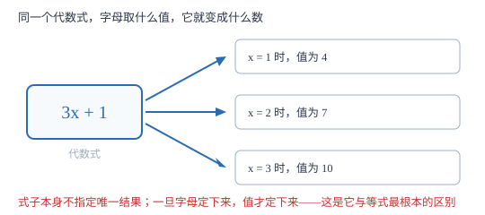

代数式与字母表示数
用字母代替数，一个式子就同时说出了无数个具体情形；判断代数式的标准不是「有没有字母」，而是「代入数值能不能算出一个值」。
| 所属主题 | 代数式 |
|---|---|
| 所属模块 | 代数 |
| 课标学段 | 第四学段（7~9 年级） |
| 核心素养 | 抽象能力模型观念 |
教材定位
人民教育出版社《人教版（2024版）义务教育教科书·数学》
七年级上册第3章 代数式3.1 列代数式表示数量关系
对应七上 3.1 第 1 课时「代数式」（教材由用字母表示运算律引入）。本篇把「字母代表任取一个数」这一层单独立起来，并补上课本没有单列、考试却必考的与等式、不等式的边界辨析。
说明
用字母表示数之后，一个式子就不再只描述一个具体情形。a+b=b+a 说的是「任意两个有理数相加，交换位置结果不变」，它一句话概括了 2+3=3+2、(-1.5)+0.7=0.7+(-1.5) 等无数个具体等式；而单独写出的 2+3=3+2 只说明了这一对。字母的用处就在这里：把「某个数」升级为「任意一个数」，让结论从特例上升为规律。
定义：用运算符号（加、减、乘、除、乘方）把数或表示数的字母连接起来的式子，叫做代数式。单独一个数（如 5、-3.1、π）或单独一个字母（如 m）也是代数式——运算符号出现零次时，式子照样成立。
辨析的关键不在「有没有字母」，而在「能不能算出一个值」。3x+1 代入 x 的具体数值能算出一个数，它是代数式；3x+1=7 说的是「左边等于右边」这个判断，判断有真假之分，却没有「值」，所以它是等式（方程）；3x+1>7 同理是不等式。判断口诀：先扫一眼有没有 =、>、<、≥、≤、≠，有就不是代数式。
使用场景
三处最常见。第一处是表示运算律与公式：长方形面积 ab、路程 vt、圆面积 π r^2，这些式子把「所有长方形」「所有匀速运动」一网打尽。第二处是列式表示未知量：题目问「还剩下多少」，先用字母把待求的量写进式子，再想办法求值。第三处是规律归纳：第 n 个图形用 3n+1 根小棒，字母一写，第 100 个图形不用数也知道答案。
判断题里也有场景感：题目给出一组式子让你挑出代数式，其中常混着等式（2x=6）、不等式（a>3）、带单位的量（5 千克）。判的时候先看关系符号，再看是不是单独的数和字母，两关都过才是代数式。
注意点
π 是数，不是字母。它虽然写成希腊字母的形状，但取值固定（约 3.14159），所以 π r^2 里只有一个字母 r，π 只是一个系数。判断字母个数时，只数真正表示变量的符号。
字母的取值受实际背景限制，不是随便什么数都行。n 表示人数时只能取正整数； racab 中的 b 不能等于 0；表示边长的字母取正数。写代数式时不必把限制写进式子，但代入求值前要先检查合不合理。
同一个字母在不同式子里的含义可以完全不同：a 在 a^2 里可能表示边长，在 99a 里可能表示单价。字母代表「一类数」或「某个尚未确定的量」，而不是某个固定的神秘数字。
证明

图 1：代数式是一台等着投料的机器——字母取什么，值就是什么；式子本身不指定唯一结果，这是它与等式最根本的区别
证明
结论 1字母之所以能代表数，是因为运算律对有理数范围内的每一个数都成立，而字母恰好代表「任取一个」。
以加法交换律为例。2+3=3+2 只验证了一对数；但只要承认「对任意两个有理数，加法都满足交换律」这条已经成立的性质，就可以取字母 a、b 分别代表任意两个有理数，写出 a+b=b+a。这一步没有新的计算，只是把「任意」两个字换成了字母。反过来，若某条性质只在部分数上成立，就不能用字母笼统表示——\sqrta 对负数没有意义，写成 \sqrta 就必须附加 a≥ 0。
关键一步依据是：字母的含义是「任取一个」，用字母写出的等式是对「每一个代进去的数」说的话；它成立的前提是背后的性质对所有取值都成立。
结论 2单独一个数或单独一个字母也是代数式。
定义要求的是「用运算符号把数或字母连接起来」，并没有规定运算符号至少出现一次。把运算符号的个数取 0，剩下的就是单个的数或字母，它仍然满足「代入数值可以算出一个值」——5 代入自己得 5，m 取 3 得 3。若把单个数排除在外，3x 与 3 的差别就变成了「类别不同」，可实际上两者都是「能算出结果的式子」，只有含不含字母的区别。
关键一步依据是：判据取「能否算出一个值」这个功能特征，而不是形式上的运算符个数。
结论 3含等号、不等号的式子不是代数式。
代数式描述的是一个「值」，值只有大小，没有真假；而 x+3=5 描述的是「x+3 与 5 相等」这个判断，判断才有真假。把 x=2 代入得 5=5（真），把 x=1 代入得 4=5（假）——同一串符号能变出真假两种结果，说明它整体不是一个值。因此凡是含 =、>、<、≥、≤、≠ 的式子，都归入等式或不等式，排除在代数式之外。
关键一步依据是：值没有真假，判断才有真假；能出真假的符号串不是代数式。
动手实验
拿一张纸横着对折 1 次得 2 层，对折 2 次得 4 层，折 3 次得 8 层，把次数记作 n，层数写成 2^n，再折一次验证 n=4 时为 16 层。然后把纸换成正方形纸片，边长记作 a 厘米，量出周长 4a、面积 a^2；用尺子量出实际边长代入，看算出的面积与数格子得到的面积是否一致。这一步做了两件事：先用字母写出「所有折法」「所有正方形」的规律，再用具体数值检验规律有没有写错。
解题思路
判断一个式子是不是代数式，走三步。第一步扫符号：从头到尾找 =、>、<、≥、≤、≠，只要出现一个，立刻判「不是」，并说出它是等式还是不等式。第二步看构成：剩下的式子必须只由数、字母、运算符号（加、减、乘、除、乘方）和括号组成，出现单位（如「千克」）、出现「≈」都不算。第三步看功能：随便给字母取一个允许的值，能不能算出一个确定的数？能，就是代数式。
用字母表示数时，先想清楚字母代表什么。若是「任意一个数」，直接写；若是「某个具体的未知量」，要在心里记住它的取值范围（整数、正数、非零）。写完后用一个小数值代进去回读一遍：3n+1 取 n=1 得 4，如果题目说「第 1 个图形用 4 根小棒」，说明式子写对了。
按场景的例题
例 1（场景：物理情境） 一辆汽车匀速行驶
一辆汽车以每小时 v 千米的速度匀速行驶 t 小时。用代数式表示它行驶的路程；当 v=60、t=2.5 时，路程是多少？
解：路程 = 速度 × 时间，写成 vt。这是代数式：只由字母 v、t 与省略的乘号组成，没有关系符号。代入 v=60、t=2.5 得 60× 2.5=150，单位是千米。
答：路程为 vt 千米；当 v=60、t=2.5 时路程为 150 千米。
例 2（场景：销售与利润） 文具店买笔记本
笔记本每本 a 元，小明买了 n 本，付给收银员 50 元。下面四个式子中，哪些是代数式？① an ② an=30 ③ 50-an ④ 50-an>0
解：① 与 ③ 是代数式：只含数与字母的乘法、减法，代入数值能算出一个值。② 含等号，是等式；④ 含大于号，是不等式。注意 ③ 里的减号是运算符号，不是性质符号，不影响判断。
答：① an 与 ③ 50-an 是代数式；② 是等式，④ 是不等式。
例 3（场景：图形设计） 给长方形菜地围栅栏
一块长方形菜地长 a 米、宽 b 米，四周围上栅栏，另留一个宽 1 米的门。用代数式表示栅栏的总长度。
解：长方形周长是 2(a+b) 米，门不需要栅栏，所以要减去 1 米，得 2(a+b)-1。检查：这个式子由数、字母、加减乘与括号组成，能算出一个长度值，是代数式；而如果写成 2(a+b)-1=9，就变成方程了。
答：栅栏总长度为 (2(a+b)-1) 米。
例 4（场景：数据调查） 统计小组测身高
某小组 n 名同学的身高分别为 h_1,h_2,\dots,h_n（单位：厘米），用代数式表示这组的平均身高。若 n=4，身高分别为 152、158、160、150，平均身高是多少？
解：平均身高 = 总身高 ÷ 人数，写成 h_1+h_2+\cdots+h_n/n。它是代数式：h_1 到 h_n 与 n 都是字母，除法写在分母上，没有关系符号。代入计算：(152+158+160+150)÷ 4=620÷ 4=155。
答：平均身高为 h_1+h_2+\cdots+h_n/n 厘米；n=4 时为 155 厘米。
常用推论
字母前的数字叫系数。3x 的系数是 3，x 的系数是 1（省略不写），-x 的系数是 -1。系数为 1 或 -1 时数字必须省略，这是书写规范里最容易丢分的一条。
用字母可以表示一类数：偶数写成 2n，奇数写成 2n+1（n 为整数）；三个连续整数写成 n-1、n、n+1。这类写法把「无数个」压缩进一个式子。
同一个代数式可以对应很多现实背景：6a 可以是「6 本单价 a 元的本子总价」，也可以是「边长为 a 的正六边形周长」。这正是代数式的一般性——式子只管数量关系，不管具体是什么东西。
易错点
错认为含有字母的式子才是代数式，所以 5 和 π 不是代数式。
为什么错把「含字母」当成了定义。定义只要求由数、字母、运算符号组成，单个数或单个字母是运算符号出现零次的特殊情形。
正确5、-3.1、π、m 都是代数式。反过来，含字母的也不一定是代数式，x+1=0 含字母却是方程。
错把 x+3=7 也叫代数式，理由是有字母、有运算。
为什么错忽略了关系符号。等号两侧各是一个代数式，但连起来整体是一个等式，它描述的是判断，不是一个值。
正确含 =、>、<、≥、≤、≠ 的都不是代数式。规范的表述是「x+3 是代数式，x+3=7 是方程」。
错认为 π r^2 里有两个字母 π 和 r。
为什么错把 π 当成未知字母。π 是圆周率，取值固定约为 3.14，属于「数」，只是用了希腊字母的写法。
正确π r^2 只有一个字母 r，系数是 π。
直观理解
把字母想成一个空盒子：盒子里放 1，式子算出一种结果；放 100，算出另一种结果；盒子空着，式子就代表所有可能结果。a+b=b+a 说的是不管往两个盒子里放哪两个数，两边总能对上；而 a+b=5 只说「这两个盒子里的数加起来恰好是 5」，盒子一换这句话就可能不成立——所以它是等式，不是代数式。